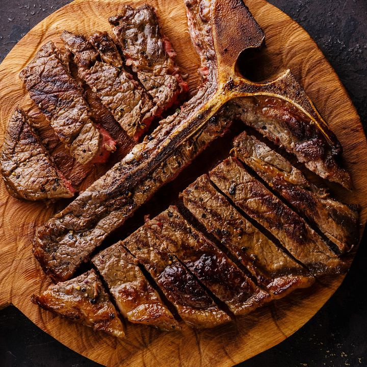
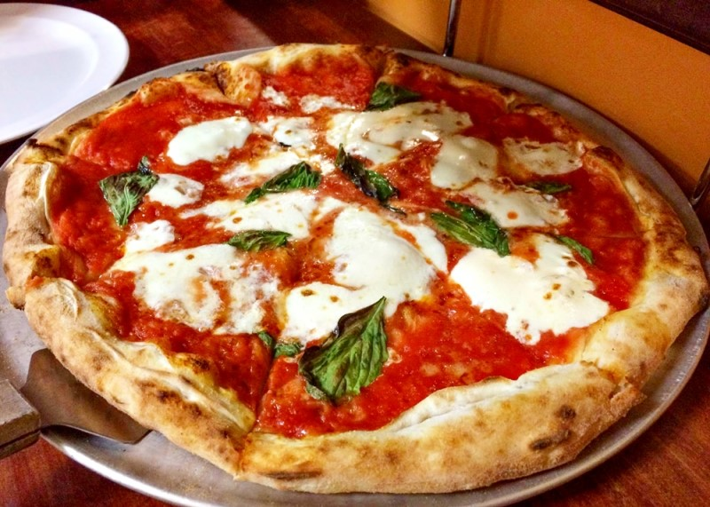
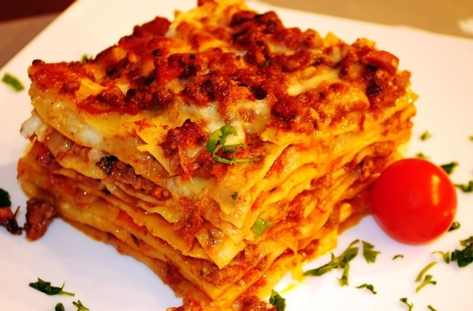
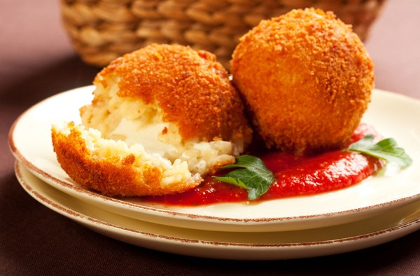
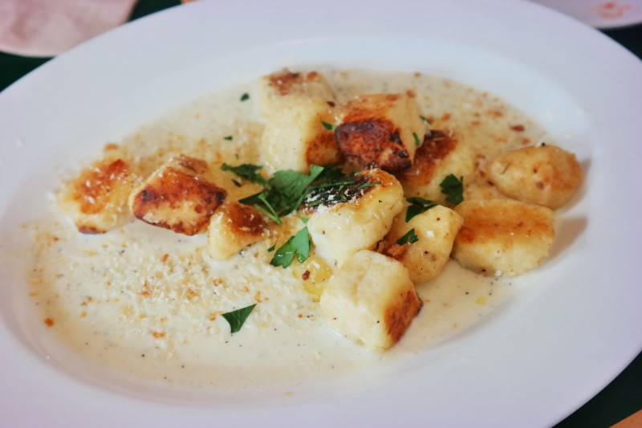
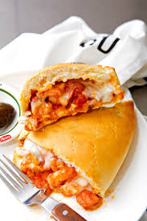
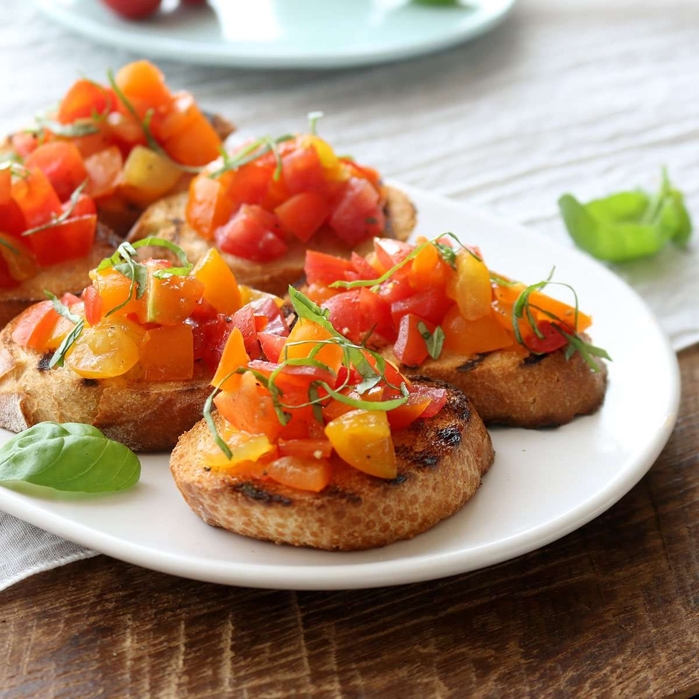

티본 스테이크는 피렌체의 대표 음식으로 T자 모양의 뼈를 중심으로 안심과 등심 2가지를 다 맛볼 수 있는 음식이다. 사이즈부터 남다른 스테이크는 두께가 두껍고, 겉만 살짝 구워내 육즙이 살아있다.

2. 마르게리타 피자 (Margherita Pizza)
이탈리아의 국기를 상징하는 마르게리타는 토핑으로 올려지는 바질은 초록색, 모짜렐라 치즈는 하얀색, 토마토는 빨간색을 나타내고 있다. 얇은 도우를 화덕에 구워 바삭하면서도 쫄깃한 식감이 좋고, 바질의 향긋함과 신선한 토마토와 부드러운 치즈가 어우러져 간단하면서 깊은 풍미를 자랑한다.

3. 라자냐 (Lasagna)
파스타 요리 중 하나다. 반죽을 얇게 밀어 넓적한 직사각형 모양으로 자른 파스타면에 다진 고기와 다진 채소, 베샤멜 소스, 치즈 등을 켜켜이 쌓아 만든 요리다. 다른 파스타와 달리 볶지 않고 오븐에 바삭해질 정도로 굽는 과정을 거치며, 한 김 식힌 후 조금씩 덜어서 먹는다.

4. 아란치니 (Arancini)
아란치니는 시칠리아 대표 길거리 음식으로, 모양새가 오렌지와 비슷하다 하여 이탈리아에서는 '작은 오렌지'라 불린다. 밥에다 고기와 채소, 소스, 치즈 등을 듬뿍 채워 오렌지 모양으로 만들어 튀겨내는데, 이탈리아식 주먹밥이라 보면 된다. 간단하면서도 든든해 한 끼 식사로 더없이 훌륭하다.

5. 뇨끼 (Gnocchi)
국물 없이 소스와 버무려 먹는 음식으로, 고대 로마시대부터 유래된 파스타의 일종이다. 수분이 적은 감자와 세몰리나 밀가루를 사용해 쫄깃한 식감과 고소한 맛이 매력적인 음식이다. '뇨끼를 잘하는 집은 파스타가 맛있다'라는 말이 있을 정도로 고난도 기술이 필요한 음식으로, 이탈리아 음식인 만큼 정통 뇨끼 맛을 느끼기 위해 이탈리아에서 놓쳐서는 안되는 음식이다.

6. 깔조네 (Calzone)
일반 피자와 달리 반으로 접은 도우 속에 고기, 치즈, 채소 등 다양한 토핑과 소스를 채워 구운 피자다. 우리나라의 만두와 비슷하여 이탈리아식 만두라고 불리며, 맛은 일반 피자와 비슷하다. 화덕에 구워 겉은 바삭하면서도 속은 촉촉하며, 맛과 영양이 풍부하고 든든한 한 끼 식사로도 손색이 없다. .

7. 브루스케타 (Bruschetta)
메인 요리를 먹기 전에 간단하게 즐기는 애피타이저다. 납작하게 썰은 바게트 빵 위에 치즈, 과일, 채소 등 각종 재료를 얹어 먹는데 빵과 토핑의 조화가 멋스러우면서 맛도 훌륭하다. 간단하게 즐길 수 있는 술안주 또는 든든한 간식을 찾는다면 브루스케타를 추천한다.

8. 티라미수 (Tiramisu)
이탈리아를 대표하는 디저트다. 티라미수는 이탈리아어로 잡아당기다를 뜻하는 '티라레'에 나를 뜻하는 '미'와 위를 나타내는 '수'가 합쳐진 말로, 이름 그대로 기분이 좋아진다는 속뜻을 가졌다. 티라미수는 에스프레소를 적신 레이디 핑거 시트와 마스카르포네 치즈, 카카오 등 층층이 쌓아 올려 각각의 재료가 조화를 이루는 것이 특징이다. 달콤하면서도 쌉싸름한 맛이 특징으로, 한 입 먹으면 사르르 녹으며 입안 가득 퍼지는 달콤함에 매료된다.